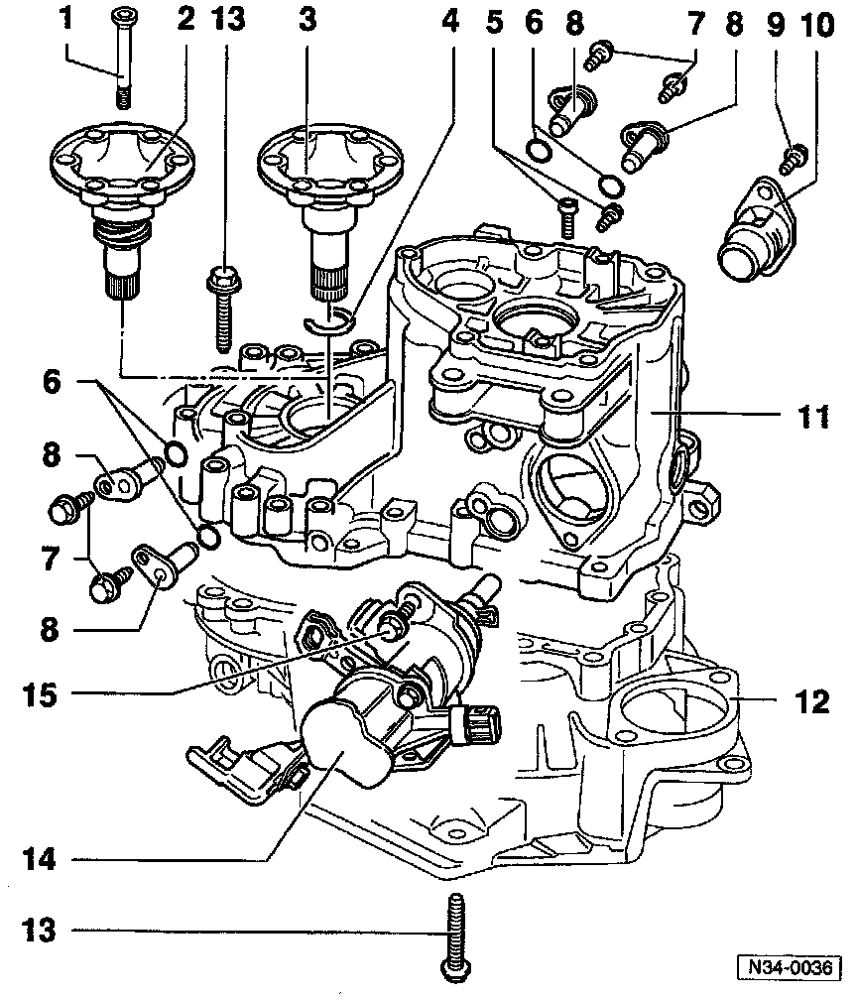

Disassembly/Assembly

1 - Cone-head bolt
- Installed in transmissions with springs behind axle flange shafts
2 - Axle flange shaft with spring
- Removing and installing -- Ref Differential Side Seal, Manual Transmission Service and Repair
3 - Axle flange shaft without spring

Removing Axle Flange Shaft Without Spring
- Place chisel or spacer (A) under axle flange and pull flange from differential gears by turning bolt (B) (B = previously removed housing bolt)
NOTE: If the axle flange shaft fails to come out straight, use two spacers (A), and bolts (B), positioned opposite each other. Tighten both bolts alternately and evenly

Installing Axle Flange Shaft Without Spring
- Clamp axle flange shaft in vise (fitted with protective jaws)
- Press old circlip out of flange shaft groove by installing new circlip (A)
- Drive in axle flanges shafts with drift (e.g. VW 295)
4 - Circlip (always replace)
5 - Torx(r) socket-head bolt (self-locking always replace)
- For reverse idler shaft
- Tightening torque: 30 Nm (22 ft lb)
6 - 0-rings (always replace)
7 - Bolt
- Tightening torque: 25 Nm (18 ft lb)
8 - Pivot pin
9 - Bolt
- Tightening torque: 25 Nm (18 ft lb)
10 - Cover plate
11 - Transmission housing
12 - Clutch housing
13 - Hex bolt
- Tightening torque: 25 Nm (18 ft lb) plus additional 1/4-turn (90°)
14 - Selector shaft mechanism
15 - Hex bolt
- Tightening torque: 25 Nm (18 ft lb)